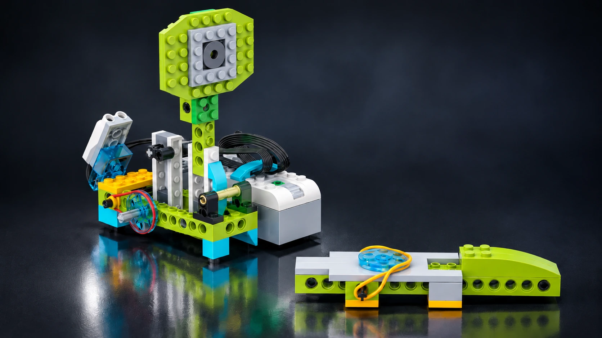
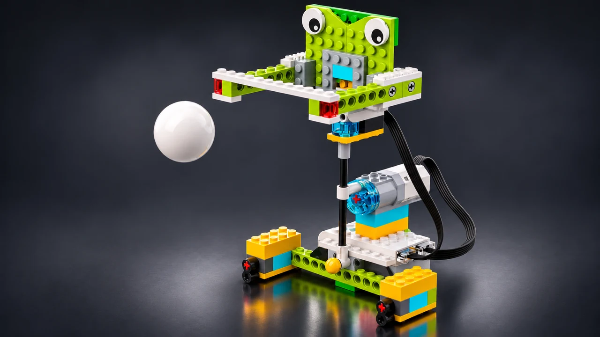
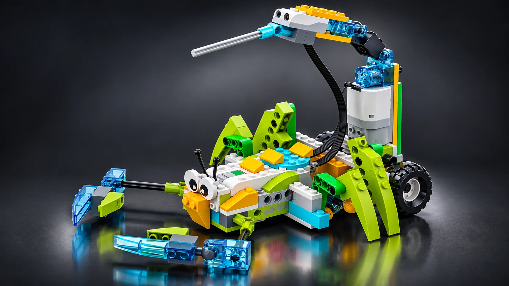

Παιχνίδια & ΑθλητισμόςLEGO WeDo 2.0
Ρομποτικός Στόχος Frisbee
Δοκιμάζουμε ένα παιχνίδι στόχου με frisbee, κινητήρα, αισθητήρα και ψηφιακή καταμέτρηση.
Δες την ιδέαΣτο EVAGELAK EDU LAB τα παιδιά ανακαλύπτουν τη ρομποτική μέσα από το παιχνίδι, τις κατασκευές και τον προγραμματισμό.

Παιχνίδια & ΑθλητισμόςΔοκιμάζουμε ένα παιχνίδι στόχου με frisbee, κινητήρα, αισθητήρα και ψηφιακή καταμέτρηση.
Δες την ιδέα
Παιχνίδια & ΑθλητισμόςΚατασκευάζουμε ένα παιχνίδι μπάσκετ και συνδυάζουμε μηχανική κίνηση, αισθητήρα και καταμέτρηση πόντων.
Δες την ιδέα
Ζώα & ΦύσηΑνακαλύπτουμε τα αραχνοειδή και προγραμματίζουμε αντίδραση με αισθητήρα απόστασης.
Δες την ιδέα Οχήματα
ΟχήματαΚατασκευάζουμε ένα μαχητικό αεροσκάφος και δοκιμάζουμε το πρόγραμμά του.
Δες την ιδέα Οχήματα
ΟχήματαDrift Car με φτερό: κατασκευάζουμε αγωνιστικό όχημα και δοκιμάζουμε την κίνησή του.
Δες την ιδέαΚάθε εργαστήριο είναι μια μικρή περιπέτεια ανακάλυψης.
Συζητάμε μια ιδέα, κάνουμε ερωτήσεις και αναζητούμε λύσεις.
Συνδυάζουμε εξαρτήματα και δημιουργούμε τη δική μας κατασκευή.
Δίνουμε εντολές, δοκιμάζουμε και βελτιώνουμε το αποτέλεσμα.
Αναγνώρισε τα πραγματικά τουβλάκια προγραμματισμού, εξερεύνησε τι κάνει το καθένα και δοκίμασε τις γνώσεις σου σε ένα γενικό quiz.
Άνοιγμα Ακαδημίας Εντολών